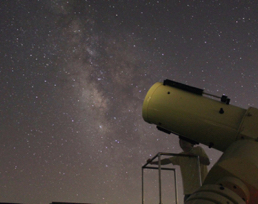
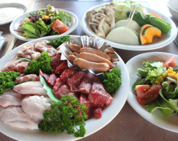
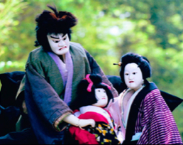
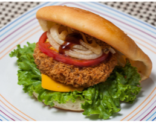
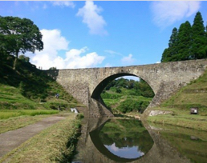
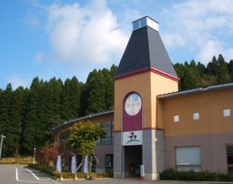
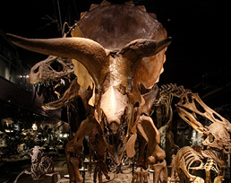

『清和高原天文台』
阿蘇山の南外輪山に位置する清和高原天文台は360°見晴らしの良い高原にあり、街灯りも少なく空気も澄んでいるので満点の星空を楽しむことができる。

『レストラン星座の森』
天文台に宿泊すると、ボリューム満点の焼肉がディナーです。最高の景色とおいしい焼肉に舌鼓を打ちながら清和高原を満喫してください。

『清和文楽の里』
人形浄瑠璃「文楽」は、三味線や人形が一体化した日本を代表する伝統芸です。運が良ければ目にすることができる。また、物産館も併設しており各種お土産も。

『肉のみやべ』
熊本県山都町馬見原にある精肉店。店頭で売っている桜コロッケなどが名物！また、焼肉屋を併設しており、さすが肉屋という上質の肉を味わうことができる。

『通潤橋』
水不足に悩んでいた民衆を救うため、江戸時代の惣庄屋「布田保之助」が、1854年に”肥後の石工”たちの持つ技術を集約した石橋。いまでも放水は田畑を潤している。

『五ヶ瀬ワイナリー』
地元でとれた葡萄でつくったワインを販売。みずみずしくフルーティーなワインはもちろん施設内で試飲することもできるけしからん施設です。一度行ったかな。

『御船町恐竜博物館』
熊本県御船町は、恐竜の化石が採れるマチとして、化石発掘を中心とした体験スポット、歴史的な名所、豊かな自然、魅力的なグルメが共存する町です。

『レストラン おにおん』
藤昭和58年のオープンより、ソース、スープ、デザートに至るまで全て手作りにこだわる洋食店。カタカナをひらがな表記する店ってなんだか名店の予感。